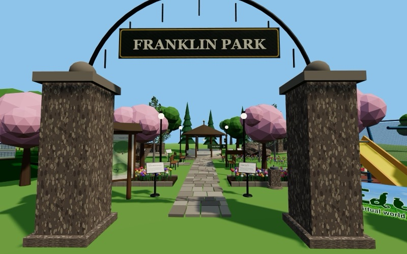

🌳
You start here
The Park
A city park laid out the way the real ones were more than a hundred years ago. Follow the path to the bandstand, walk under a stone arch bridge, find the pond with the geese, and have a look round the playground.
The Park![A stratovolcano with a quarter cut away, standing on a red ash plain under a hazy rust-coloured sky. The cut face shows dozens of nested bands of grey and red rock following the slope, a glowing orange magma chamber at the base, a bright conduit running up to the crater, and dark red dikes fanning out from the chamber. Lava fountains at the summit under a grey ash column. In the foreground five rock specimens stand on colour-coded plinths labelled Granite, Sandstone, Limestone, Shale and Conglomerate, with a black-and-white rock cycle chart at the right and a column of basalt at the left.](assets/screenshots/thumbs/world_volcano.jpg)